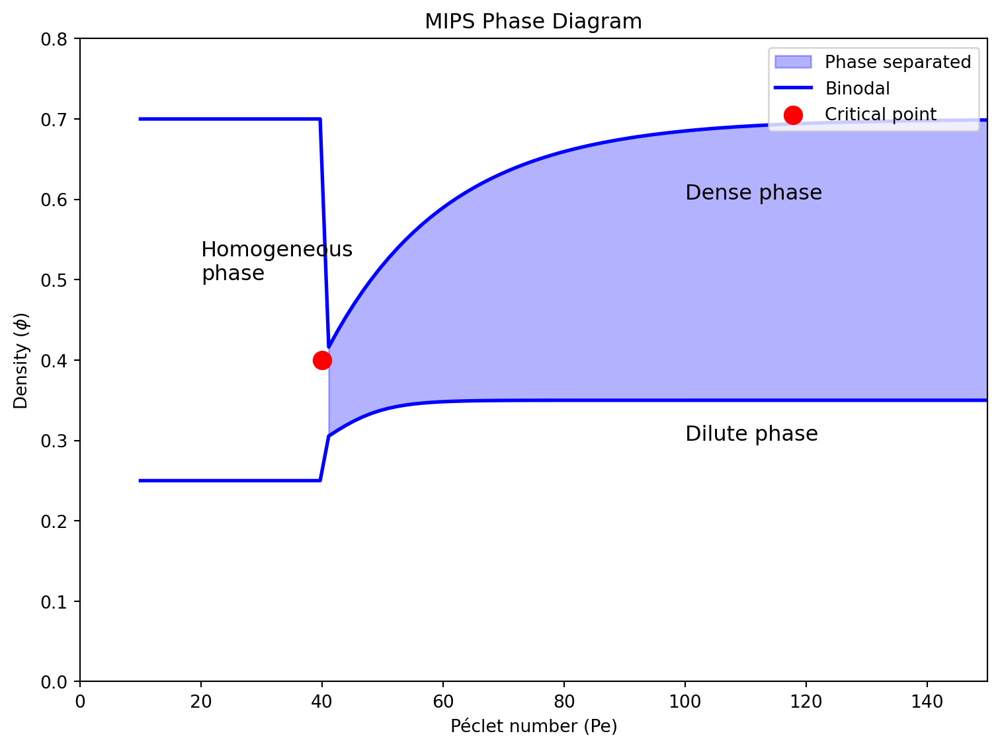

Motility Induced Phase Separation: Theory and Physical Significance
MIPS describes the spontaneous segregation of self-propelled particles into dense and dilute phases, occurring without any attractive interactions between particles. This counterintuitive phenomenon emerges purely from the interplay between self-propulsion and steric hindrance.
The central mechanism of MIPS can be understood through a feedback loop: active particles move slower in crowded regions due to collisions, leading to their accumulation, which further increases local density. This positive feedback mechanism drives phase separation even with purely repulsive interactions—a stark departure from equilibrium phase transitions that typically require attractive forces.
The persistence of directed motion, characterized by the persistence time \tau_p, plays a crucial role. When particles maintain their direction over sufficiently long times, they can effectively create local pressure differences that drive phase separation.
Mathematical Description
Microscopic Model: Active Brownian Particles
The standard microscopic model for MIPS uses Active Brownian Particles (ABPs) with excluded volume interactions. The dynamics are governed by:
Here, \mathbf{r}_i represents the position of particle i, while \mathbf{n}_i = (\cos\theta_i, \sin\theta_i) is its orientation unit vector. The first term captures self-propulsion with speed v_0, the second term accounts for repulsive interactions \mathbf{F}_{ij} between particles, and the third term incorporates translational diffusion with coefficient D_t and Gaussian white noise \boldsymbol{\xi}_i(t). The angular dynamics are governed by rotational diffusion with coefficient D_r = 1/\tau_p.
The crucial feedback mechanism emerges when we consider the effective speed of particles in crowded environments. Although v_0 is constant in the equation above, the actual displacement is reduced by collisions. This can be modeled explicitly by introducing a density-dependent effective speed:
v_{eff}(\rho) = v_0 \cdot f(\rho)
where f(\rho) is a decreasing function of local density \rho, often approximated as:
f(\rho) = (1 - \rho/\rho_{max})^\alpha
with \alpha > 0. This creates the fundamental coupling between motility and density that drives MIPS.
Continuum Theory
For a macroscopic description, we can employ a continuum theory based on the particle density field \phi(\mathbf{r},t). The active equivalent of Model B (a standard model for equilibrium phase separation) has been developed, called “Active Model B+”:
where M(\phi) is the mobility, \mu(\phi) is a non-equilibrium chemical potential, and \boldsymbol{\Lambda} represents noise. Unlike equilibrium systems, \mu(\phi) cannot be derived from a free energy functional due to the absence of detailed balance.
Alternatively, a hydrodynamic approach couples the density field \rho with a polarization field \mathbf{P}:
The density-dependent swim speed v(\rho) explicitly shows the speed-density coupling and creates the feedback loop driving MIPS:
v(\rho) = v_0(1-\rho/\rho_c)
Let’s derive the expression that demonstrates this feedback coupling mathematically. Consider a steady state scenario where we have a spatial density distribution \rho(\mathbf{r}). At steady state, the particle flux must balance:
\nabla \cdot \mathbf{J} = 0
For simplicity, let’s consider a one-dimensional system where particles move along the x-axis, and assume the polarization field reaches a local steady state where \mathbf{P} \approx \mathbf{P}_0 = \text{constant}. In this case:
In regions where the net flux J_0 is small compared to the local active flux v(\rho)P_0 (which is true inside phase-separated domains), we can approximate:
\frac{d\rho}{dx} \approx \frac{v(\rho)P_0}{D_t}
This differential equation can be solved by separating variables:
\frac{d\rho}{v(\rho)} \approx \frac{P_0}{D_t}dx
Assuming v(\rho) = v_0(1-\rho/\rho_c) and integrating both sides:
For regions where \rho \ll \rho_c, we can use the approximation v(\rho) \approx v_0, which gives:
\rho(x) \propto \frac{P_0 v_0}{D_t}x
For denser regions where \rho approaches \rho_c, the velocity v(\rho) approaches zero, and from our original expression:
\frac{d\rho}{dx} \approx \frac{v(\rho)P_0}{D_t}
We can see that as v(\rho) decreases, the density gradient decreases, causing particles to accumulate. In the extreme case as v(\rho) \to 0, we get \frac{d\rho}{dx} \to 0, meaning the density plateaus at \rho_c.
This mathematical derivation demonstrates the fundamental feedback mechanism: in regions of higher density, particle velocity decreases, which in turn reduces the outward flux, causing further accumulation. This creates a positive feedback loop that drives phase separation even without attractive interactions between particles.
Phase Behavior and Critical Phenomena
MIPS occurs when two key parameters exceed critical values:
The Péclet number Pe = v_0/(D_r \sigma), which measures the ratio of active motion to diffusion
The particle density \phi
These parameters determine the strength of the motility-density coupling. At high Péclet numbers, particles move persistently enough to create significant density fluctuations, and when density exceeds a critical value, the feedback between motility and density becomes strong enough to drive phase separation.
The phase diagram exhibits a binodal curve separating homogeneous and phase-separated regions, with a critical point characterized by universal scaling behavior. Interestingly, these critical properties may fall into different universality classes than their equilibrium counterparts—a topic of ongoing research that connects to renormalization group theory.
Code
import numpy as npimport matplotlib.pyplot as plt# Create a more accurate MIPS phase diagram based on literaturePe = np.linspace(10, 150, 100) # Péclet number typically needs to be sufficiently high for MIPS# More realistic binodal curves based on literature# At low Pe, no phase separation occurs until a threshold# As Pe increases, the binodal region widens and then saturatespe_threshold =40phi_binodal_upper =0.7-0.3* np.exp(-(Pe-pe_threshold)/20) * (Pe > pe_threshold)phi_binodal_lower =0.25+0.05* (np.tanh((Pe-pe_threshold)/10) +1) * (Pe > pe_threshold)# Critical point occurs at the onset of phase separationcritical_pe = pe_thresholdcritical_phi =0.4plt.figure(figsize=(8, 6))# Only fill the phase separated region where Pe > thresholdplt.fill_between(Pe, phi_binodal_lower, phi_binodal_upper, where=(Pe > pe_threshold), alpha=0.3, color='blue', label='Phase separated')plt.plot(Pe, phi_binodal_upper, 'b-', lw=2, label='Binodal')plt.plot(Pe, phi_binodal_lower, 'b-', lw=2)plt.scatter([critical_pe], [critical_phi], color='red', s=100, label='Critical point')# Add labels for the different phasesplt.text(100, 0.6, "Dense phase", fontsize=12)plt.text(100, 0.3, "Dilute phase", fontsize=12)plt.text(20, 0.5, "Homogeneous\nphase", fontsize=12)plt.xlabel('Péclet number (Pe)')plt.ylabel('Density ($\phi$)')plt.ylim(0, 0.8)plt.xlim(0, 150)plt.legend(loc='upper right')plt.title('MIPS Phase Diagram')plt.tight_layout()plt.show()

Figure 1: Schematic phase diagram for MIPS showing the binodal line and critical point.
MIPS exemplifies several profound concepts in non-equilibrium statistical mechanics:
Emergent Thermodynamics: Despite being driven by non-equilibrium processes, MIPS exhibits phase coexistence reminiscent of equilibrium systems. This suggests the possibility of constructing effective thermodynamic frameworks for active systems—an open question that connects to fundamental postulates of statistical mechanics.
Entropy Production: Active systems continuously dissipate energy and produce entropy. Quantifying this entropy production and its relationship to pattern formation addresses foundational questions about irreversibility and the arrow of time.
Broken Time-Reversal Symmetry: The equations governing active particles lack time-reversal symmetry, leading to novel dynamical phenomena including odd elasticity, non-reciprocal interactions, and topologically protected states—concepts that parallel developments in quantum many-body physics.
Applications and Broader Context
For physics Master students, MIPS provides a conceptual bridge between statistical mechanics and several interdisciplinary fields:
Biological Physics: Cellular aggregation, bacterial biofilms, and tissue formation involve self-propelled biological entities that can exhibit MIPS-like behavior.
Soft Matter: MIPS concepts help explain the behavior of synthetic active colloids, microswimmers, and other designed active materials.
Complexity Science: Pattern formation in active systems exemplifies how simple rules can generate complex, emergent behaviors—a theme that resonates across physics from condensed matter to cosmology.
Computational Physics: Simulating MIPS requires numerical techniques that balance microscopic accuracy with computational efficiency, providing practical experience in scientific computing.
Conclusion: Why MIPS Matters for Physics Students
MIPS represents more than just a curious phenomenon—it embodies fundamental questions about thermodynamics, statistical mechanics, and our understanding of non-equilibrium systems. For Master students in physics, MIPS offers:
A concrete example of how broken symmetries (in this case, time-reversal) lead to new physical phenomena
A testbed for developing non-equilibrium statistical theories that may eventually rival the power and elegance of equilibrium statistical mechanics
An arena where theory, simulation, and experiment can be directly compared
A connection point between fundamental physics and applications in materials science and biophysics
By understanding MIPS, students gain insight into the broader class of active matter systems that challenge our understanding of collective behavior and self-organization—themes that permeate physics from the quantum to the cosmic scale.
References
For further reading, consider these foundational papers:
Cates, M. E., & Tailleur, J. (2015). Motility-induced phase separation. Annual Review of Condensed Matter Physics, 6, 219-244.
Ramaswamy, S. (2010). The mechanics and statistics of active matter. Annual Review of Condensed Matter Physics, 1, 323-345.
Marchetti, M. C., et al. (2013). Hydrodynamics of soft active matter. Reviews of Modern Physics, 85, 1143.
Equilibrium Phase Transitions: Fundamental Principles
Unlike the non-equilibrium phase separation phenomena discussed above, equilibrium phase transitions form the bedrock of conventional condensed matter physics. These transitions are characterized by qualitative changes in system properties at critical points, accompanied by spontaneous symmetry breaking.
Classification of Phase Transitions
Ehrenfest’s classification distinguishes phase transitions by the order of the derivative of the free energy that exhibits discontinuity:
First-order transitions: Discontinuity in first derivatives of free energy (e.g., volume, entropy), characterized by latent heat and phase coexistence
Second-order (continuous) transitions: Continuous first derivatives but discontinuous second derivatives, marked by diverging correlation lengths and scale invariance
Modern classification often uses the more general distinction between discontinuous (first-order) and continuous transitions, with the latter showing universal behavior near the critical point.
Landau-Ginzburg Theory
Landau-Ginzburg theory provides a powerful framework for describing continuous phase transitions based on an order parameter \phi that distinguishes between phases. The theory constructs a free energy functional:
Where the potential V(\phi) takes the form of a power series expansion:
V(\phi) = r\phi^2 + u\phi^4 + \ldots
The parameter r typically has temperature dependence r \propto (T-T_c), changing sign at the critical temperature T_c. For T > T_c, the minimum of V(\phi) occurs at \phi = 0 (disordered phase), while for T < T_c, the minima occur at non-zero values of \phi (ordered phase).
The equilibrium state minimizes this free energy, leading to the Euler-Lagrange equation:
Near the critical point, the theory predicts scaling behavior for various thermodynamic quantities:
Correlation length: \xi \sim |T-T_c|^{-\nu}
Order parameter: \phi \sim |T-T_c|^{\beta}
Susceptibility: \chi \sim |T-T_c|^{-\gamma}
Specific heat: C \sim |T-T_c|^{-\alpha}
The critical exponents \alpha, \beta, \gamma, and \nu satisfy scaling relations like: \alpha + 2\beta + \gamma = 2\nu d = 2 - \alpha
Universality and the Renormalization Group
The true power of equilibrium phase transition theory lies in the concept of universality—systems with different microscopic interactions but the same symmetries and dimensionality exhibit identical critical behavior, characterized by the same set of critical exponents.
Renormalization Group (RG) theory, developed by Wilson, explains this universality by analyzing how the system behaves under changes in observation scale. Near the critical point, the correlation length diverges, making the system scale-invariant. RG identifies fixed points in parameter space that determine the universal properties of phase transitions.
Experimental Examples
The Ising Model: A Paradigmatic Example
The Ising model provides perhaps the simplest theoretical framework exhibiting a phase transition:
H = -J\sum_{\langle i,j \rangle} \sigma_i \sigma_j - h\sum_i \sigma_i
Where \sigma_i = \pm 1 represents a spin at site i, J is the coupling constant, and h is an external field. The model describes a ferromagnetic transition with order parameter M = \frac{1}{N}\sum_i \sigma_i (the magnetization).
The Ising model has been realized experimentally in various magnetic systems: - Fe_2 compounds demonstrate critical behavior closely matching 3D Ising model predictions - Thin films of ferromagnetic materials often exhibit 2D Ising behavior - CoNb_2O_6 (cobalt niobate) provides a rare example of a 1D Ising system
The 2D Ising model was solved analytically by Onsager, revealing a critical temperature T_c = \frac{2J}{k_B\ln(1+\sqrt{2})} and critical exponents: \alpha = 0, \beta = 1/8, \gamma = 7/4, and \nu = 1.
Liquid-Gas Critical Point
The liquid-gas transition provides an accessible example of critical phenomena. As pressure and temperature approach the critical point: - The distinction between liquid and gas phases vanishes - Density fluctuations become visible (critical opalescence) - The compressibility diverges
This transition belongs to the 3D Ising universality class when mapped appropriately: - Order parameter: \phi \sim \rho - \rho_c (density difference from critical) - Control parameter: r \sim T - T_c (temperature deviation from critical) - Symmetry-breaking field: h \sim \mu - \mu_c (chemical potential deviation)
Experimental measurements on various fluids (Xe, CO_2, H_2O) confirm the predicted critical exponents within experimental uncertainty.
Superfluid Helium: Beyond the Ising Universality
Liquid helium transitions to a superfluid state at 2.17K, characterized by zero viscosity and quantized vortices. Unlike the Ising model, the order parameter is complex (\psi = |\psi|e^{i\theta}), describing the macroscopic quantum wavefunction.
This transition belongs to the XY universality class (O(2) symmetry), with different critical exponents than the Ising model. High-precision experiments have confirmed theoretical predictions from RG calculations to remarkable accuracy.
Connection to MIPS
The study of equilibrium phase transitions provides crucial context for understanding MIPS. While MIPS shares phenomenological similarities with equilibrium transitions (phase separation, coexistence, critical-like behavior), it fundamentally differs in:
The absence of a free energy functional governing the dynamics
The breaking of time-reversal symmetry and detailed balance
The continuous energy input required to maintain the phase-separated state
These differences challenge our understanding of universality and scaling in non-equilibrium systems. The mathematical tools developed for equilibrium transitions (order parameters, correlation functions, scaling theory) still prove useful in MIPS analysis, but require careful reinterpretation in the non-equilibrium context.
Advanced studies in active matter physics aim to determine whether MIPS and similar non-equilibrium transitions belong to new universality classes, or if they can be mapped onto equilibrium counterparts with effective parameters—questions at the frontier of modern statistical physics.
Ising Model Simulation
Below is an interactive simulation of the Ising model that allows you to explore phase transitions by adjusting key parameters. The simulation visualizes the spin configurations in real-time, demonstrating how the system behavior changes across the critical temperature.
2.27
0
1.0
Magnetization: 0
Energy: 0
Critical temperature (2D Ising): Tc ≈ 2.27J/kB
This interactive simulation allows you to explore the Ising model’s phase transition by adjusting three key parameters:
Temperature (T/J): Control thermal fluctuations. Notice how the system organizes into ordered domains below the critical temperature (T_c ≈ 2.27) and becomes increasingly disordered above it.
Magnetic Field (h/J): Apply an external field that biases spins. At strong fields, the system magnetizes regardless of temperature.
Coupling Strength (J): Adjust the interaction strength between neighboring spins. Higher values promote stronger ordering.
The simulation uses the Metropolis algorithm to sample configurations according to the Boltzmann distribution. The visualization shows spin states (red = up, blue = down) updating in real-time, while displaying the current magnetization and energy of the system.
Try setting the temperature near the critical point (T ≈ 2.27) and observe the large, fluctuating domains characteristic of critical phenomena. This behavior illustrates the diverging correlation length and enhanced fluctuations discussed in the Ising model section.